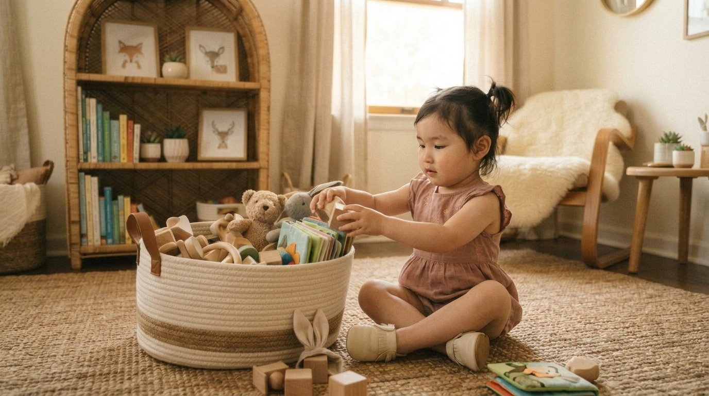
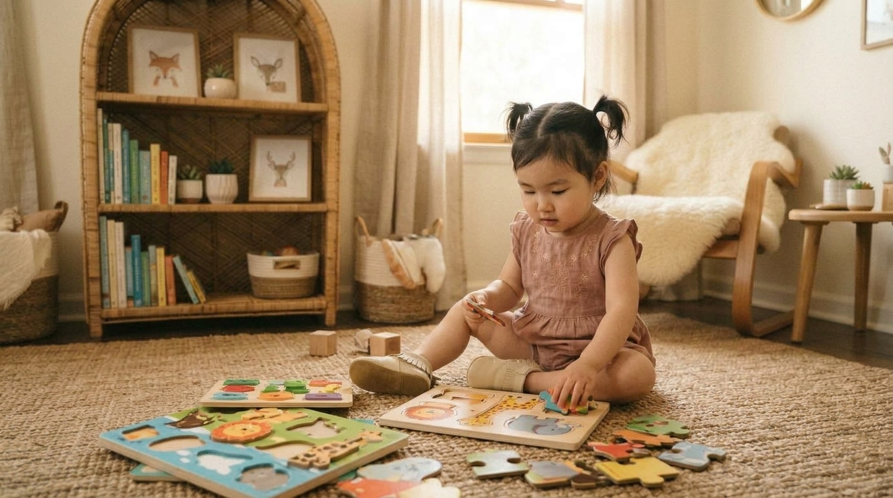
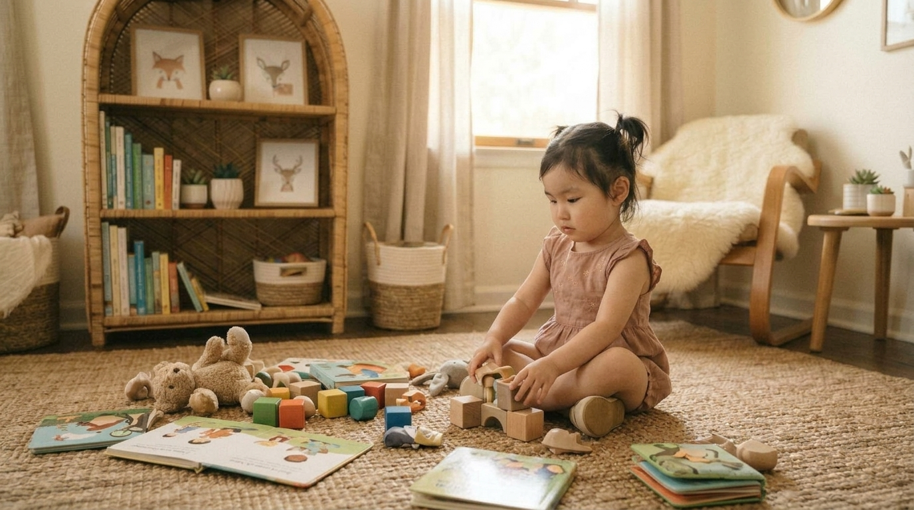
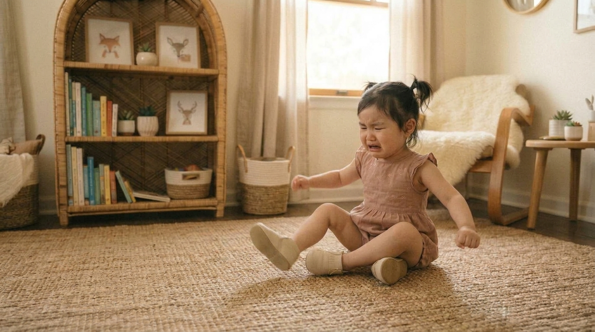

Toddler Trails
The eZine section on educational materials and references to raising your toddler, Toddler Trails offers a wide range of tools, both customized and standardized materials, that helps young mothers in building a strong foundation for their children's success.
Toddler Trail Kits are usually composed of Videos complemented by eBooks and eReferences that house a collection of games, exercises and tools that teach foundational concepts easily understood by toddlers. These basic concepts are the building blocks of bigger, more complex life lessons later in life.
Starting early is the cornerstone of learning --- you need to crawl before you can learn to walk, and learn to walk before you can run. Learn the alphabets first before learning to read, then write.
Having the right foundation in their toddler years make it possible for children to absorb, accept and, most important of all, take to heart the character-building traits that matters most in a leader and a pioneer.
Toddler Trails provides children's educational tools for mothers who believe in the power of parenting in building successful adults.
Bedtime Stories that Build Character: Independence
A collection of children’s books that teaches your toddlers on the importance of becoming independent, emotionally and physically. Includes valuable life lessons on how to arrive at independence without putting themselves at risk or under undue stress. This eBook is an investment in your child’s lifelong stability by impressing on her young mind the concept of independence and guiding her on how to gradually achieve it as they mature.
Order Here ›Bedtime Stories that Lead to Passion & Purpose
This collection of bedtime stories is a stark departure from your generation’s Cinderella fairytales. These bedtime stories are simplified “coming of age” stories about discovering their own unique capabilities by finding their passion and purpose in life. It instills in their young mind that fulfillment and happiness does not necessarily require a wedding dress. Sometimes, your happily ever after begins with finding who you are and becoming the person you always wanted to be.
Order Here ›
Bedtime Stories that Build Character: Responsibility
This collection of bedtime stories illustrates to your toddler the importance of taking responsibility in words and plots a 5 year old can understand. Each story clearly illustrates to your child the direct link between choice and responsibility --- that every choice has a consequence and making their own choices means being responsible for the consequences as well. It teaches them the privilege of taking action to steer their life into the direction they want instead of letting the outside world take control of them, but that each decision makes them accountable for the results.
Order Here ›

Understanding Emotions
One of the keys to emotional maturity in adulthood is learning how to identify emotions to prevent misplaced outbursts. This maturity begins in the toddler years with these educational games.
Order Here ›
Educational Puzzles
The mind learns best when it is relaxed and having fun. In comes our educational puzzles that will tickle your little one’s fancy while teaching them the rudiments of logical thought, causality and problem solving.
Order Here ›Custom Products
myBiblioteque has custom products for your toddler's growth years. Each custom product is an individualized material specific to your child's lifegoal. Are you a family of lawyers and you want your child to continue that legacy? Start early with custom toys that shape the skills necessary to become the best lawyer she can be. Is your son the scion of a media company? That requires a different set of skills and therefore a different learning plan from the child inheriting the legacy of lawmakers. Or maybe, you want your son to be the first in your family to build a worthy legacy, that also calls for a different set of skills from the other two because he will be facing challenges the other two wont.

Custom Games for your little Scion
Scions are special. Their goals are not ordinary so they cannot be raised the usual way. And the lesson begins at five years old, not 15. From the first building block to the last college textbook, a scion's education and play, both in and outside the classroom, should be properly curated to shape her into the person she needs to be. Begin today and we will design his first custom toys designed to shape her young mind on how to lead in his specific industry.
Request a Quote, Click Here
Therapy for Behavioral Problems
In a hypercompetitive world, there's very little room for mistakes. Make sure your child's resilience and emotional maturity is prepared to face the challenges of tomorrow and it has to begin today while she is young and malleable. Temperament is a habit and the earlier you shape her emotional resilience, the more you dramatically improve her chances at success. Request a quote for Developmental Psychologist consultations and child training programs.
Request a Quote, Click Here
Custom Learning Plan
Nothing happens at random. Although you can never control the future, you can steer it to where you want it to go. The same goes for child rearing. At each stage of her growth, you have to prepare the right learning plan that will shape her into the person she should become. If you intend for your child to achieve a goal or cross a milestone, creating a lerning plan towards the goal increases her chances, you just have to know how. We do, and we can create a custom learning plan for you.
Request a Quote, Click Here